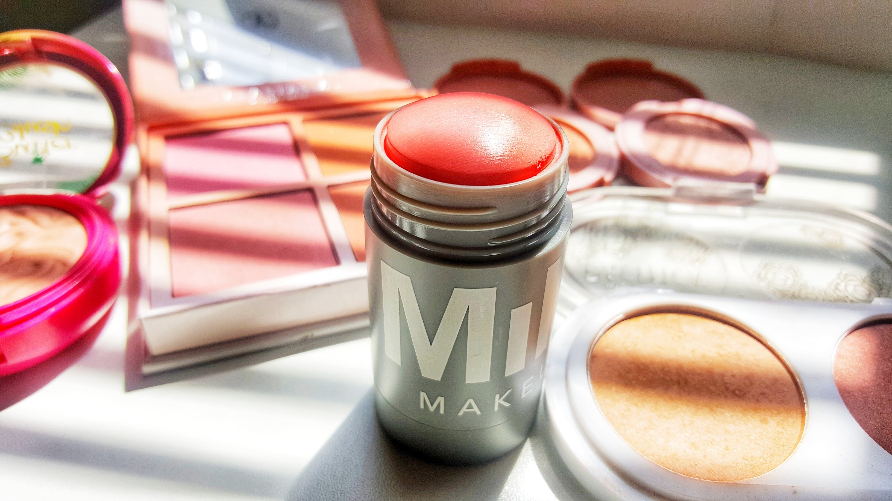
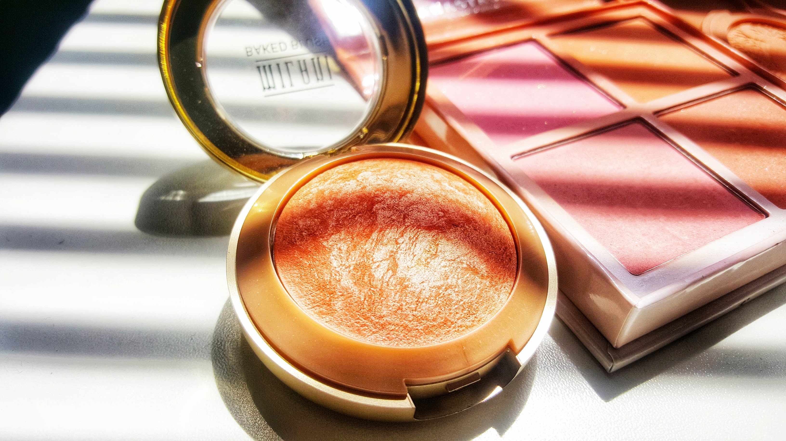
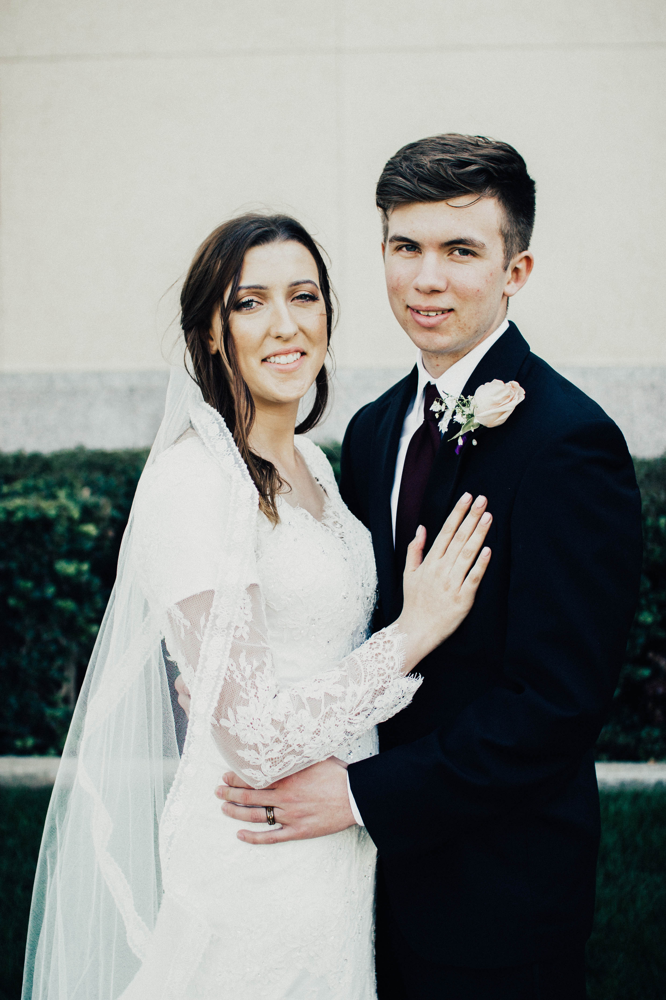

Hey there! Welcome to my homepage! My name is Savannah and I will give my self a little background! I am from Lancaster, CA and I am the oldest of 5. I served a mission in Seoul, South Korea and it was the bestttt. I am Senior offcially this year and I cannot WAIT to graduate. I have an internship this fall with the church's ICS department being a web developer in Microsoft SharePoint. I am so excited. This semester I am taking some pretty hard classess. I am taking Human Computer Interaction, IOS Development, Intro to Web Design(got to get that one credit), Software Engieering 1, and this class!
When I am not working or studying I am generally watching Netflix or working on my Makeup Blog. I have to admit I am pretty obssessed with it and I think it's really fun, and a great way for women to feel more confident!
 Copyright: all pictures of makeup are created and taken by me
My Husband and I